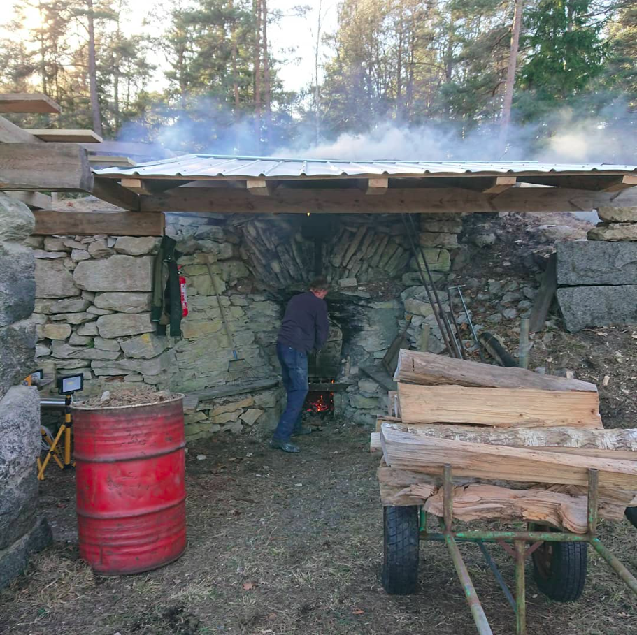

Vi bevarar det gotländska kalkhantverket
Vi arbetar periodiskt med de olika momenten för att få fram tillräckligt med kalk för kulturvårdens behov.
Småskalig brytning av lokal kalksten av hög kvalitet.
Bränning av kalk i vedeldade ugn enligt traditionella metoder.
Vill du lära dig mer om vår verksamhet? Hör av dig!

Buttlekalk AB bryter kalksten och bränner kalkstenen i Buttle, mitt på Gotland. Vi för vidare den tusenåriga kalkbränningstraditionen på Gotland genom att tillhandahålla material för restaurering av kulturhistoriska byggnader. Buttlekalk bevarar inte bara ett material, utan även ett värdefullt kulturarv och hantverkskunnande.
För frågor och samarbeten, tveka inte att höra av dig till oss via e-post.
Här finner du svar på vanliga frågor om Buttlekalk AB och vår verksamhet.
Buttlekalk AB är en verksamhet som bryter och bränner kalksten enligt traditionella metoder i Buttle, Gotland.
Vår brända kalk används av utförare och producenter för underhåll och restaurering av kulturhistoriskt värdefulla byggnader.
Vi använder lokal, ren kalksten och ved för att bränna styckekalk (bränd osläckt kalk).
Buttlekalk drivs vidare av en grupp företag och personer som tycker att den lokala och småskaliga produktionen är värd att bevara.
Arne Smedberg, Sjonhem
Daniel Nymberg, Visby
Oscar Titelman, Visby
Alvar Hallgrens Bygg, Roma
Gotlandsbyggen, Visby
Österby Brädgård, Visby
Målarkalk AB, Helsingborg
Stucco Maestro, Malmö
Buttle är en gammal "kalkbrännar-socken". Tillgången på högkvalitativ kalksten var god och dessutom har det alltid funnits rikligt med skog. Den siste kalkbrännaren – Kalk-Olle – brände ugnar i Buttle fram till 1956.
1989 tog Hans Andersson, Ulf Andersson och Arne Smedberg, mfl, initiativ till att starta hantverksmässig kalkbränning i Buttle på nytt. Hans hade på 40-talet huggit ved till Kalk-Olles ugnar och fått med sig kunskap om bränningen.
I många år drev Hans och de övriga delägarna företaget för att hålla liv i hantverks-traditionen att bränna kalk i Buttle.
Idag drivs verksamheten vidare i samma anda, men när tidigare delägare har trätt tillbaka har nya traditionsbärare tagit vid.
Du kan nå oss via e-post på buttlekalk@gmail.com för frågor eller beställningar.
Ta del av vårt autentiska och högkvalitativa kalksten för restaurering och bevarande av historiska byggnader. Kontakta oss idag för att säkra ditt material.
Köp nu